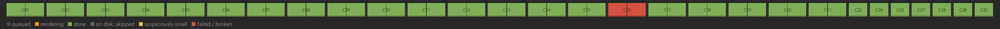
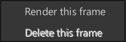
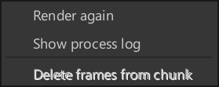
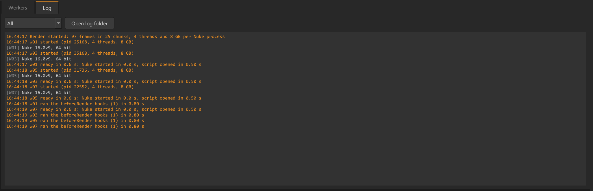
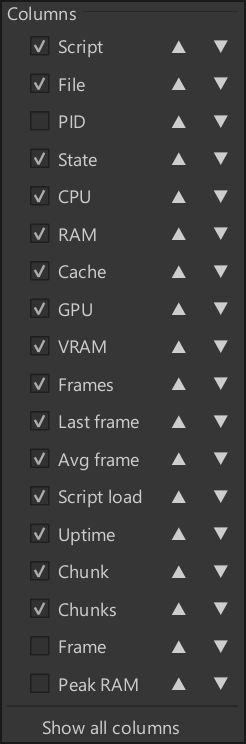

Rychlý lokální render pro Nuke. Render se rozdělí na kousky (chunky) a ty se počítají v několika Nuke procesech najednou. Po renderu JKrender zkontroluje každý frame na disku.
Obsah
1Jak JKrender funguje
2Instalace a spuštění z Nuku
3Mapa okna
4Karty renderů a ovládací řádek
5Dlaždice a mapa framů
6Panel Output: náhled a framy
7Panely Chunks a Details
8Panely Workers a Log
9Panel System
10Taby Job a Settings
11Jak nastavit render
12Test this script
13Hlídání RAM a VRAM
14Kontroly, zvuky, pád, data
15Myš a klávesy: tahák
16Když něco nejde
1 Jak JKrender funguje
Klasický render v Nuku běží v jednom procesu, který frame po framu počítá celý script. Jeden Nuke ale málokdy vytíží všech 32 vláken procesoru. JKrender proto pustí několik Nuke procesů vedle sebe. Každý otevře script jen jednou a pak dostává kousky práce, takzvané chunky: třeba 10 framů za sebou.
Tři čísla, která rozhodují o rychlosti
Processes
Kolik Nuke procesů běží najednou (pro všechny rendery dohromady). Víc procesů znamená víc práce naráz, ale i víc RAM a VRAM.
Threads
Kolik vláken procesoru má každý proces (Nuke -m). Processes × Threads by mělo dát zhruba počet vláken PC (tady 32).
Cache
Limit cache jednoho procesu v GB (Nuke -c). Proces si ve skutečnosti vezme víc. Kolik, ukáže System › RAM.
Výchozí nastavení je 8 procesů × 4 vlákna. Těžké comp scripty, které jeden Nuke vytíží sám (Defocus, Denoise), bývají rychlejší na 4 × 8 a zaberou poloviční RAM. Scripty, kterým roste VRAM, chtějí méně procesů. Co je nejlepší pro tvůj script, změří Test this script (kapitola 12).
Co je kde uložené
Co
Kde
Nastavení
~/.nuke/JKrender/settings/settings.json (každý uživatel má svoje). Starší verze ho měly v ~/.jkrender; JKrender ho při prvním spuštění sám přesune.
Logy renderů
~/.nuke/JKrender/log/: jedna složka na render (snapshot scriptu, job, log každého Nuke procesu a report.json). Starší než 15 dní se mažou; kopie scriptů renderů, které nejsou otevřené, se po hodině zabalí (.gz).
Stažené knihovny
~/.nuke/JKrender/lib/: numpy a OpenEXR (náhled EXR) a ffmpeg (filmy). Nová verze JKrenderu je nechá být.
Výsledky testů
~/.nuke/JKrender/settings/test_results
Vyrenderované framy
Tam, kam je posílá Write. JKrender je sám nikdy nemaže, jen přes tlačítko Delete.
2 Instalace a spuštění z Nuku
Instalace (jednou)
1Zkopíruj celou složku JKrender do %USERPROFILE%\.nuke\. Složka se může jmenovat jinak (zip z GitHubu dává JKrender-main): vždycky ji přejmenuj na JKrender.
2Do ~/.nuke/init.py přidej řádek (soubor případně vytvoř):
nuke.pluginAddPath("./JKrender")
3Restartuj Nuke. Při prvním startu se JKrender jedním dotazem zeptá, jestli stáhnout, co Nuke nemá:
Co
Velikost
K čemu
numpy a OpenEXR
asi 15 MB
náhled EXR a kontrola pixelů
ffmpeg a ffprobe
asi 77 MB
kontrola a přehrávání filmů (MOV, MP4, MXF)
Stahuje se na pozadí do JKrender/lib, Nuke se mezitím dá používat. ffmpeg je LGPL build z github.com/BtbN/FFmpeg-Builds, ověřený proti SHA-256 z vydání. Nabídne se jen tehdy, když ho PC ještě nemá: ffmpeg na PATH nebo z WinGet se použije přednostně.
Když odmítneš, render funguje dál, jen bez náhledu EXR nebo bez kontroly a přehrávání filmů. Znovu se zeptá po smazání lib/DECLINED (numpy, OpenEXR) nebo lib/DECLINED_FFMPEG (ffmpeg) a restartu Nuka. Když stažení nevyjde, Nuke napíše proč a jak to nainstalovat ručně (winget install ffmpeg).
Nuke 16 a novější spouští okno ve vlastním Pythonu Nuka. Nuke 13–15 mají PySide2: nainstaluj Python 3.10 nebo novější a pip install PySide6 psutil, JKrender si ho najde (nebo nastav JKRENDER_PYTHON). Windows, macOS i Linux.
Nová verze: JKrender ji nabídne při otevření (What's new, Update, Later) nebo přes Settings › Check for updates; složky lib, log a settings zůstanou. Pak restartuj Nuke.
Menu JKrender v Nuku
Položka
Co dělá
Render Selected Write(s) Ctrl+Alt+R
Pošle vybrané Writy (nebo Groupy s Writy) do JKrenderu. Každý Write dostane vlastní kartu. Když okno ještě neběží, otevře se.
Open Renders Folder
Otevře složku s logy renderů.
Když script není uložený, zeptá se Save it and render?: renderuje se uložená verze. Write, jehož cesta nemá číslo framu (sh010.exr místo sh010.####.exr), odmítne: každý frame by přepsal stejný soubor. Scripty z Nuke Non-commercial a Indie (.nknc, .nkind) se renderují ve stejném režimu.
Co se stane po odeslání
Snapshot: renderuje se script v podobě, jakou měl při odeslání. V Nuku můžeš hned dál pracovat a ukládat, na běžící render to nemá vliv. Když script změníš a chceš ho renderovat znovu, pošli ho z Nuku znovu: novější odeslání nahradí starou kartu.
Dotaz na cache: když je otevřený nějaký Nuke, Render se zeptá, jestli mu vyčistit buffery, playback cache a Blink cache, aby měl render víc paměti. Výchozí odpověď je No a render se spustí v obou případech; Settings › Clear Nuke cache without asking ji čistí bez ptaní. Diskovou cache to nemaže.
3 Mapa okna
Okno má nahoře karty renderů a ovládací řádek, pod nimi čísla a mapu framů. Zbytek tvoří tři panely: vlevo Output / Chunks / Details, vpravo nahoře Workers / Log a vpravo dole taby System / Job / Settings / Donation / Author. Hranice mezi panely jde táhnout myší.
1
2
3
4
5
6
7
8
9
10
1Karty renderů: jeden Write (render) na kartu. Kliknutím ho vybereš.
2Odhad, kdy budou hotové všechny rendery.
3Render, Pause, Stop pro vybraný render.
4Slate, Framerange, Processes, Threads, Cache a Chunk tohoto renderu (jen pro čtení).
5Dlaždice s čísly: framy, čas, rychlost, procesy, kontroly.
6Mapa framů po chuncích. Kliknutím na frame ho zobrazíš.
7Output: náhled framu s přehráváním.
8Output: filtr, kontroly, složka, mazání a seznam framů.
9Workers: časová osa každého Nuke procesu.
10System: zátěž PC a tabulka procesů. Vedle něj taby Job, Settings, Donation a Author.
4 Karty renderů a ovládací řádek
Karta renderu
Každý odeslaný Write je jedna karta: číslo, název scriptu, soubor, který Write renderuje (sh010_comp_v003.####.png; tooltip ukáže node Writu a celou cestu), pruh postupu a stav (Ready, Waiting, Rendering, Paused, Checking output, afterRender hooks, Done, Failed, Stopped). Klik kartu vybere a celé okno pak ukazuje tento render. Shift+klik vybere víc karet; Render, Pause a Stop pak platí pro všechny, Render again i pro hotové (zeptá se jednou za všechny). Křížek × render zavře, framy na disku zůstanou. Červená karta: v renderu je chyba (selhal, Nuke nevyrenderoval frame, rozbité framy, chyba Nuka, render hook, který selhal), i během renderu; co přesně, řekne tooltip karty. Pád Nuke procesu kartu nečervená: chunk se vyrenderuje znovu v novém Nuku a tooltip karty řekne, kolikrát Nuke spadl. Ani proces zavřený kvůli RAM nebo VRAM chyba není.
Rendery sdílejí jeden rozpočet procesů. Vedle sebe jich běží nejvýš tolik, kolik je v Settings Max renders at once (výchozí 3); procesy se mezi ně dělí (8 → 4 + 4 → 3 + 3 + 2). Film (MOV, MP4…) má vlastní proces navíc a do Max renders se nepočítá (kapitola 6). Čísla karet jdou podle místa: zavřeš kartu a další dostanou čísla znovu od 1.
Karta vpravo: ALL RENDERS DONE IN
Kdy by měly být hotové všechny rendery, které běží nebo čekají, při rychlosti, jakou PC renderuje teď. Pod tím: v kolik skončí, jak dlouho už běží a kolik framů zbývá. Když všechny doběhnou, karta ukáže ALL RENDERS TOOK, tedy jak dlouho to celé trvalo.
Ovládací řádek
Prvek
Co dělá
Render
Spustí vybraný render (nebo víc vybraných). Framy, které už jsou na disku v pořádku, přeskočí. Po Stopu render pokračuje tam, kde skončil (Resume). Když má render framy na disku (hotový, zastavený nebo s framy z dřívějška), zeptá se: Only missing dorenderuje jen framy, které na disku chybí nebo jsou rozbité (ostatní jsou v mapě tmavě zelené), All frames again vyrenderuje všechno znovu, Cancel nic. Po Stopu běhu All frames again nabídne nejdřív Go on (N left): vyrenderují se i framy, ke kterým ten běh nedošel.
Pause
Zmrazí všechny Nuke procesy renderu uprostřed framu (procesor se uvolní, paměť zůstane držená). Další klik pokračuje.
Stop
Zastaví render, ukončí procesy a smaže napůl zapsané framy a dočasné soubory Nuka. Hotové framy zůstanou.
Slate
Číslo slatu: frame před Framerange, když je slate zapnutý (tab Job).
Framerange
Framy tohoto renderu: rozsah z Nuku, pokud jsi ho nezměnil v tabu Job.
Processes · Threads · Cache · Chunk
S čím render běží. Mění se v tabu Job › Processes and Chunks; počet procesů i za běhu pravým tlačítkem v System.
Barevný pruh
Výsledek renderu, viz níže.
Barevný pruh s výsledkem
Barva
Co znamená
Příklad
Zelená
Hotovo, všechny framy jsou na disku a prošly kontrolou.
Done in 2:06. All 97 frames are on disk and pass the check.
Žlutá
Hotovo, ale něco není ověřené nebo vypadá podezřele (framy nezkontrolované, podezřele malé; slate se jako malý nehlásí).
frames not checked · 2 suspiciously small
Červená
Chyba: render selhal, rozbité framy, nebo Check pixels našel problém (NaN, černý frame…).
2 broken frames · Output: Problems shows them
Šedá
Probíhá: Checking pixels…, čekání na volné procesy a podobně.
Waiting: 1 render already uses the PC
5 Dlaždice a mapa framů
Dlaždice
Co ukazuje
Frames
Hotové / všechny framy renderu, procenta a kolik se jich právě renderuje.
Elapsed
Jak dlouho render běží (bez pauz).
Remaining
Odhad zbývajícího času při současné rychlosti.
Speed
Framy za sekundu a za minutu, všechny procesy dohromady. Nejlepší číslo pro porovnání nastavení.
Frame time
Kolik trvá jeden frame v jednom procesu a kolik framů se počítá najednou (× N at once).
Nuke processes
Kolik procesů renderuje / kolik jich běží a kolik míst z Processes zabírají všechny rendery. Filmy navíc jako + N for movies; když jsou otevřené jen filmy, N for movies.
Check frames
Kontrola souborů: chybějící, prázdné, useknuté, nečitelné a podezřele malé framy.
Check pixels
Kontrola pixelů v R, G a B (EXR, PNG, JPEG, TIFF, DPX): černé, prázdné a jednobarevné framy, framy stejné jako jiný a frame, jehož velikost nebo bitová hloubka se liší od ostatních. U EXR navíc NaN, inf a komprese; jeho další vrstvy (AOV, utility passy) se neposuzují a framy jen z nich ukážou no RGB. Film má místo těchto dvou jedinou dlaždici Check video: ok, check it, broken, nebo checking, dokud se čtou jeho framy.
Mapa framů

Každý obdélníček je jeden frame, seskupené po chuncích (C01, C02…). Klik na frame ho otevře v náhledu; jeho tooltip ukáže stav, proces, čas, kontroly a sekundy beforeFrameRender / afterFrameRender z Writu. Barvy:
čeká (queued)
renderuje se
hotovo
na disku: přeskočen (Only missing), nebo po All frames again zatím starý frame, dokud se nezapíše nový
podezřele malý
selhal / rozbitý
Render again: všechno, nebo jen chybějící
Když má render framy na disku a klikneš na Render again, zeptá se: Only missing (výchozí) dorenderuje jen framy, které chybí nebo jsou rozbité; ostatní přeskočí a v mapě jsou tmavě zelené. All frames again vyrenderuje všechno znovu, Cancel nic. U filmu (MOV, MP4) se nic neptá: film je jeden soubor a renderuje se celý. Když jsou všechny framy už na disku a projdou kontrolou, nic se nerenderuje a Log napíše Nothing to render.
S víc kartami vybranými přes Shift se zeptá jednou za všechny (např. 27 of 27 frames of 3 renders…). Framy, které byly na disku už při otevření nebo z běhu před Stopem, jsou tmavě zelené. V Output pak filtr Rendered ukazuje jen framy z tohoto běhu, All všechny.
6 Panel Output: náhled a framy
Náhled
Kolečko myši: zoom, tažení posouvá obraz.
Dvojklik: obraz se vrátí na celý frame. Když už je celý, náhled se zvětší přes všechny tři panely; zpět klávesou Esc.
Při zoomu se načte plné rozlišení (EXR i 4K).
EXR je ukázaný na svém formátu: bbox menší než formát sedí na svém místě na černé, overscan se ořízne. Pravé tlačítko › Show the whole format vypnuté: náhled vyplní jen bbox.
Space spustí a zastaví přehrávání. Nikdy nestiskne tlačítko, takže render nezastaví.
Lišta pod náhledem
Předchozí frame · Play/Pause (přehrává hotové framy dokola ve fps scriptu) · další frame · posuvník přes všechny framy · číslo framu · zvětšit (náhled přes tři panely, Esc zpět). Pod lištou jsou informace o framu: cesta, velikost, rozlišení, kanály a výsledky kontrol.
Tlačítka
Prvek
Co dělá
Filtr
All: všechny framy najednou: vyrenderované, přeskočené, rozbité, not on disk i ty, které se teprve budou renderovat, a framy na disku mimo Framerange. Ostatní filtry jsou jeho části: Rendered: jen framy vyrenderované v tomto běhu. Problems: chyby, podezřele malé framy a nálezy pixelové kontroly. Framerange: jen framy zvoleného rozsahu.
Check frames
Znovu projde soubory všech framů: existuje, není prázdný, je celý a čitelný a není výrazně menší než ostatní. Frame, který na disku ještě není, zůstane not on disk, za rozbitý se nepočítá.
Check pixels
Na pozadí projde RGB každého framu (EXR, PNG, JPEG, TIFF, DPX): černé, prázdné a jednobarevné framy, framy stejné jako jiný kdekoli v sekvenci, odlišná velikost nebo bitová hloubka; u EXR i NaN, inf a komprese, ne jeho další vrstvy. Slate přesně stejný jako první frame (nic na něm není) ukáže červeně same as 1000. Zhruba 0,1 s na 4K frame. Jen hlásí, nic znovu nerenderuje.
Open folder
Otevře složku s výstupem.
Delete
Smaže vyrenderované framy z disku: všechny (výchozí) nebo zadaný rozsah. Předtím se zeptá.
Seznam framů
Sloupce: Frame, State, Chunk, Worker (který proces ho počítal), Time, Size, Check frames, Check pixels. S filtrem All jsou v seznamu od začátku všechny framy a stav se mění, jak se renderují. Po Render again framy nezmizí: zůstanou jako on disk, queued again se starou velikostí a časem (jdou prohlížet i přehrávat), dokud je nový render nepřepíše. Framy na disku mimo zvolený Framerange zůstávají v seznamu s poznámkou not in Framerange.

Pravé tlačítko na framu (nebo na víc vybraných): Render this frame / batch: vyrenderuje jen tyto framy znovu (když render běží, přidají se do něj). Delete this frame / batch: smaže je z disku (jen když render neběží).
7 Panely Chunks a Details
Chunks
Jeden řádek na chunk: Chunk (C01…), Frames (rozsah), Count, State, Process (který ho počítá), Done, Time, s / frame a Note (proč byl chunk zopakován, try 2 of 3 a podobně). Frame, který selže třikrát, pokaždé v novém Nuku, se vzdá sám, ve vlastním chunku; zbytek jeho chunku se renderuje dál.

Pravé tlačítko:Render again (chunk znovu), Show process log (log procesu, který ho počítal), Delete frames from chunk (jen když render neběží).
Details
Všechno o renderu na jednom místě: script a jeho snapshot, Writy a výstupní cesty, formát, fps, rozsah, verze Nuka, s jakými Processes × Threads × Cache běží, časy a cesty ke logům. Hodí se, když potřebuješ zjistit, co přesně se renderovalo.
MOV / MP4 / MXF: místo seznamu framů se ukáže jeden filmový soubor s detaily (kodek, profil, fps, rozlišení, timecode, počet framů proti nastavení Writu) a přehrávač s lupou. Tlačítka Check video, Open folder, Delete video. Po renderu ffmpeg přečte i všechny framy: černé, jednobarevné a zamrzlé framy (stejné jako ten předchozí) jsou chyba, červeně jako u sekvence; kvůli nim se nic znovu nerenderuje. Film se nedá rozdělit, takže ho renderuje jeden proces se všemi vlákny. Ten běží navíc, vedle míst z Processes: spustí se hned, i když jedou jiné rendery, a sekvence vedle něj o žádný proces nepřijde. Do Max renders at once se nepočítá; víc filmů má každý svůj proces. Když vedle něj renderuje sekvence, jmenuje se proces filmu podle míst (s Processes 8 je to W09), jinak dostane W01; v System má vlastní řádek. Počká jen tehdy, když je paměť nad Reload Nuke at. Paměťová pravidla ho zavírají až úplně nakonec, protože by film začínal znovu od začátku.
8 Panely Workers a Log
Workers: časová osa procesů
Jeden řádek na Nuke proces (W01–W08), zleva doprava čas. šedá: Nuke startuje a otevírá script (i po Reload Nuke, popisek again: reload). zelená: hotové chunky (s číslem chunku). oranžová: chunk, který se právě renderuje. fialová: render hooky, beforeRender mezi načtením scriptu a prvním chunkem, afterRender po posledním chunku (Settings › Show render hooks in Workers). Chunky ostatních renderů jsou ztlumené (Settings › Dim other renders in Workers). Je hned vidět, jestli některý proces stojí, startuje znovu nebo dlouho otevírá script. Prázdný čas mezi dvěma rendery se vystřihne, uvnitř renderu úsek 30 s a delší bez jediného procesu: zůstane jen úzká mezera, takže rendery si nechají šířku. Časová osa tu není; jak dlouho chunk trval, řekne jeho tooltip.
Najetí myší na chunk ukáže jeho framy a kolik z nich se vyrenderovalo, jak chunk skončil (every frame rendered, stopped after frame 1012 for a reload (VRAM over 95 %), stopped mid-chunk: GPU frozen, Nuke crashed (exit code …)) a co proces udělal potom (then: on to C07, closed: RAM 98 %). Zbytek přerušeného chunku se vrátí do fronty a dodělá ho jiný proces.
Pravé tlačítko na řádku procesu otevře stejné menu jako v panelu System (kapitola 9).
Log

Zprávy JKrenderu a výstup každého Nuke procesu s časem. Filtr: All, JKrender only (jen zprávy JKrenderu), Errors and warnings. Open log folder otevře složku s logy tohoto renderu: snapshot scriptu, job.json a worker_NN.log každého procesu.
Každý proces v logu hlásí, za jak dlouho byl připravený, rozepsané na start Nuka a otevření scriptu. Pokud start trvá 15 s a víc, JKrender varuje. Pomalý start bývá licence nebo startovací skripty pipeline, ne script samotný.
Log také píše, jak dlouho trvaly render hooky (W01 ran the beforeRender hooks (2) in 0.31 s, hooky Writu na každý frame sečtené na konci renderu), a varuje, když několik procesů čekalo ve stejnou chvíli: zpravidla na disk, a pak víc procesů render nezrychlí.
9 Panel System
Dlaždice a grafy
Dlaždice jsou stejně široké, v pořadí CPU (využití a vlákna), RAM (X of Y GB – cache Z GB: kolik je obsazeno a kolik z toho drží cache Nuků; tooltip rozepíše, kolik berou Nuke procesy a kolik zbytek PC), GPU (využití karty), VRAM (paměť karty), Disk write, Disk read a Network. Graf Load ukazuje CPU, RAM, GPU a VRAM v %, graf Disk / network přenosy v MB/s. CPU threads: jeden sloupeček na vlákno procesoru, takže je vidět, jestli je PC vytížené celé.
Tabulka procesů
Jeden řádek na místo z Processes, i na prázdné místo, kde proces zrovna neběží (zavřený, čeká na paměť), plus řádek pro každý běžící film. Když jsou otevřené jen filmy, je řádek na film.
Sloupec
Význam
Process
Číslo procesu (W01…).
Script · File
Script, který proces renderuje, a soubor, který zapisuje.
State
Co proces dělá a co udělá dál, např. busy → reload (VRAM over 95 %), closed (GPU frozen), wait: Reload at 85 % of VRAM, running afterRender hooks. Všechny texty jsou v tabulce v kapitole 13. Tooltip u čekajícího místa řekne, na co přesně čeká.
CPU
Kolik vláken procesoru proces opravdu vytěžuje (z kolika má).
RAM · Cache
Skutečná paměť procesu a jeho cache Nuka proti limitu.
GPU · VRAM
Využití grafické karty a VRAM tohoto procesu. Jakákoli karta: NVIDIA, AMD nebo Intel Arc (na Linuxu NVIDIA a AMD).
Frames · Avg frame · Last frame
Kolik framů udělal, jak dlouho trvaly v průměru a poslední.
Script load
Za jak dlouho Nuke nastartoval a otevřel script.
Uptime · Chunk · Chunks
Jak dlouho běží, na jakém chunku je a kolik jich udělal.
PID · Frame · Peak RAM
Skryté sloupce: ID procesu ve Windows, aktuální frame, nejvyšší RAM.
Klik na hlavičku tabulky otevře seznam sloupců: zaškrtnutím sloupec ukážeš nebo skryješ, šipkami změníš pořadí. Sloupce jde přetahovat i myší za hlavičku. Šířky a pořadí se uloží při zavření okna.
Pravé tlačítko na procesu (v tabulce nebo na řádku ve Workers) otevře menu vpravo. S víc běžícími rendery má Add process to podmenu s výběrem renderu.

Položka menu
Co dělá
Pause / Resume
Zastaví nebo pustí jen tento proces.
Close after this chunk
Proces dodělá svůj chunk a zavře se (State busy → closes by me, pak closed by me), i pozastavený nebo už zavíraný kvůli paměti. Processes se sníží o 1 a zůstane tak.
Close
Zavře proces hned. Jeho chunk se vrátí do fronty. Na jeho místo pak může naskočit jiný.
Work on › render
Přesune proces na jiný běžící render (State busy → move to a jméno Writu), po framu nebo chunku podle Reload after.
Add process
Spustí ještě jeden proces (i kliknutím do prázdného místa tabulky). Processes se zvýší o 1 a zůstane tak. Paměťová pravidla platí dál.
Start again · Remove process
U zavřeného procesu: spustí ho znovu, nebo ho odebere (i prázdné místo, kde žádný proces neběží). Odebraný se nevrátí a Processes se sníží o 1.
Show process log
Otevře log tohoto procesu.
10 Taby Job a Settings: každé nastavení
Nastavení se ukládá hned. U každého je po najetí myší nápověda, pod důležitými je šedá poznámka.
Tab Job: Job (render vybraný nahoře)
Nastavení
Co dělá
Výchozí
Slate frame
Zapnuto: každý render navíc vyrenderuje jako slate frame před svým Framerange (1001-1020 → slate 1000). Vedle přepínače je číslo slatu vybraného renderu.
zap.
Framerange
Framy renderu, např. 1001-1100 nebo 1001-1010,1050. Každý render má svůj. Prázdné pole vrátí rozsah z Nuku. Potvrdíš Enterem nebo kliknutím jinam. Během renderu zamčené.
z Nuku
Test
Test this script… změří nastavení podle tohoto PC a ukáže nejrychlejší (kapitola 12).
—
Tab Job: Processes and Chunks (pro všechny rendery)
Nastavení
Co dělá
Výchozí
Processes
Nuke procesy pro všechny rendery dohromady. Filmy mají proces navíc.
8
Threads
Vlákna na proces (-m).
4
Cache
Limit cache Nuka na proces v GB (-c). Kolik proces opravdu bere, ukazuje System › RAM. Příliš malá cache render zpomalí: Nuke pak zahazuje a přepočítává.
podle RAM
Chunk: Auto / Fixed
Auto: asi 4 chunky na proces, nejvýš 10 framů (46 framů s 8 procesy → 2, 96 → 3, 320+ → 10). Fixed: velikost zadáš vpravo. Platí pro chunky, které ještě nezačaly.
Auto
Smaller chunks at the end
Ke konci renderu se chunky zmenšují až na jednotlivé framy, takže všechny procesy doběhnou zhruba zároveň.
zap.
Processes, Threads a Cache jsou během renderu zamčené. Počet procesů za běhu změníš pravým tlačítkem v System (Add process, Close after this chunk, Remove process).
Tab Settings: General
Nastavení
Co dělá
Výchozí
Start render on open
Render začne hned po otevření okna, bez kliknutí na Render.
vyp.
Start next render when one ends
Když render skončí nebo selže, sám se spustí další dosud nespuštěný render v pořadí karet. Render, který jsi zastavil, nic dalšího nespustí.
vyp.
Clear Nuke cache without asking
Render pokaždé bez ptaní vyčistí cache otevřených Nuků (buffery, playback cache, Blink cache). Vyp.: nejdřív se zeptá.
vyp.
Sound when a render ends
Zvuk po skončení renderu, až doběhnou zapnuté kontroly. Jiný zvuk při chybě, rozbitých framech nebo problému v pixelech. Zastavený render je potichu.
zap.
Check frames when a render ends
Po skončení renderu (i po Stopu) jednou projde každý vyrenderovaný frame: je tam, není prázdný, je celý a čitelný, není výrazně menší než ostatní. Vypnuto: rozbitý frame se počítá jako hotový, dokud nestiskneš Check frames.
zap.
Check pixels when a render ends
Hned po kontrole framů na pozadí zkontroluje RGB všech framů (černé, jednobarevné, stejné, odlišný formát; u EXR i NaN a inf; u filmu černé, jednobarevné a zamrzlé framy). Jen hlásí.
zap.
Check pixels when a render opens
Stejná kontrola framů, které už jsou na disku, hned po otevření renderu. Render ji zastaví.
zap.
Max renders at once
1: rendery jdou po sobě, další se začne načítat, když předchozí dodělává poslední chunky. 2–3: běží vedle sebe a dělí se o procesy (celkově ne rychlejší, ale z každého shotu vidíš framy brzo). Filmy se nepočítají.
3
Show processes of all renders
Workers a System ukazují procesy všech renderů. Vypnuto: jen vybraného.
zap.
Dim other renders in Workers
Na časové ose svítí chunky vybraného renderu, ostatní jsou ztlumené.
zap.
Show render hooks in Workers
beforeRender a afterRender hooky scriptu jako fialové bloky na časové ose Workers. Vypnuté: nekreslí se; běží tak jako tak a Log je zapisuje.
zap.
Delete old render logs
Při otevření JKrenderu smaže složky logů starší než nastavený počet dní. Framy nikdy. Kopie scriptů renderů, které nejsou otevřené, zabalí (.gz, pětina velikosti) a při dalším renderu je rozbalí.
zap., 15 dní
Check for updates se hned zeptá GitHubu na nejnovější vydání (JKrender se ptá i při každém startu); novější otevře okno aktualizace. Reset to defaults vrátí všechno na výchozí hodnoty včetně sloupců tabulek.
Tab Settings: Performance and Optimization
Nastavení
Co dělá
Výchozí
Use GPU
Spouští Nuke s --gpu, takže GPU nody (Kronos, ZDefocus, Denoise…) počítá grafická karta. Každý proces má vlastní VRAM. Platí pro procesy spuštěné od teď.
zap.
Reload Nuke
Proces zavře Nuke a otevře script v novém, s RAM a VRAM zase na začátku; stojí to jedno načtení scriptu. When memory is full: když je RAM nebo VRAM po dobu Reload Nuke after nad Reload Nuke at, a to jen proces, který drží paměti nejvíc, po jednom. After every chunk: každý proces po každém chunku.
When memory is full
Reload after
Kdy proběhne reload kvůli paměti. Frame: hned po framu, který proces právě dopsal; zbytek chunku se vrátí do fronty pro ostatní, nic se neztratí a paměť je volná do jednoho framu. Chunk: až po celém chunku; framy chunku zůstanou v jednom procesu (node, který čte okolní framy, je najde v cache). Stejně se řídí i předání místa jinému renderu, Work on a zavírání kvůli plné paměti. After every chunk a Close after this chunk jsou vždy po chunku.
Frame
Reload Nuke at
RAM % a VRAM %. Drží-li se paměť po dobu Reload Nuke after na této hodnotě nebo nad ní, proces, který jí drží nejvíc, načte Nuke znovu. Zavřená místa se vracejí jen pod touto hodnotou.
RAM 95 %, VRAM 95 %
Reload Nuke after
Jak dlouho musí RAM nebo VRAM vydržet na Reload Nuke at nebo nad ním, než se proces s největší pamětí načte znovu (1–600 s). Kratší vrátí paměť dřív, delší ušetří načítání scriptu, když se paměť hranice jen dotkne.
10 s
Kill at
RAM % a VRAM %. Paměť skoro plná: jeden proces se zavře hned, uprostřed framu. Napůl zapsaný frame se smaže a chunk se vrátí do fronty. Nikdy pod Reload Nuke at, takže reload přijde vždycky dřív. Když PC zamrzá ještě před tím, sniž ho.
RAM 98 %, VRAM 98 %
VRAM pole jsou aktivní jen se zapnutým Use GPU. Paměť hlídá JKrender pořád, vypnout to nejde. Kapitola 13 popisuje všechna pravidla a časy.
Taby Donation a Author
Donation: odkazy, kterými můžeš autora podpořit, když ti JKrender šetří čas (zatím PayPal). Author: Jan Kanta, odkazy na LinkedIn a GitHub.
Jeden Nuke nevytíží všechna vlákna, víc procesů ano.
testovací 4K script: 8 × 4 nejrychlejší
Těžký comp (Defocus, Denoise, hodně vrstev)
4 × 8 nebo 2 × 16
Jeden proces vytíží víc vláken. 8 procesů vyčerpá RAM, procesy se zavírají.
heavy comp: 4 × 8 s cache 12 GB 17 fr/min, 2 × 16 16 fr/min
Script, kterému roste VRAM (GPU nody)
1–2 × 32/16
VRAM roste s každým framem; víc procesů se na kartu nevejde.
VRAM +1,7 GB na frame → 1 × 32
Jak poznat, že nastavení není dobré
Málo paměti
System › RAM je u Reload Nuke at, ve State je wait: Reload at … of RAM nebo closed (RAM 98 %), procesy se zavírají a znovu startují (šedé bloky ve Workers). Řešení: méně procesů s více vlákny, nebo menší Cache.
Plná grafická karta
VRAM u 95 %, ve State často busy → reload (VRAM over 95 %), closed (VRAM 98 %) nebo closed (GPU frozen). Když se to opakuje, Log napíše, že méně procesů s více vlákny může být rychlejší (sám nic nemění). Řešení: méně procesů (Test this script ukáže kolik), případně vypnout Use GPU.
Nevyužité CPU
CPU threads jsou z velké části prázdné a RAM má rezervu. Řešení: přidat proces (pravé tlačítko › Add process) nebo zvýšit Threads.
Dlouhé otevírání scriptu
Šedé bloky ve Workers jsou dlouhé, Script load je vysoký. Při startu se Nuky přetahují o licence a startovací skripty. Řešení: delší chunky se tolik neprojeví; se samotným scriptem to obvykle nesouvisí.
Nejlepší měřítko je dlaždice Speed (framy za minutu). Porovnávej ji mezi nastaveními na stejném scriptu, nebo to nech na Test this script.
12 Test this script
Hotový test: zelený řádek je nejrychlejší, oranžový druhý. Winner test ukazuje, o kolik déle trval test s ostatními, Winner Whole Shot totéž pro celý shot.
Tlačítka nahoře
Create tests zjistí, jaký je počítač (řádek pod tlačítky: CPU, jádra a vlákna, u Intelu výkonná a úsporná jádra, RAM, grafika) a vytvoří 7 nastavení od 1 procesu se všemi vlákny po tolik procesů, kolik PC unese: každý proces aspoň 4 vlákna a aspoň 4 GB cache. Na 32 vláknech a 94 GB: 1×32, 2×16, 3×10, 4×8, 5×6, 6×5, 8×4. Nad 64 vlákny dostane proces nejvýš 64 (jedna skupina procesoru ve Windows). Nahradí vše v tabulce.
Add test přidá vlastní nastavení (Processes, Threads, Cache, Reload Nuke a Reload after), Remove test odebere vybrané. Pravé tlačítko na řádku: Edit test. Vlastní testy se pamatují. Pravidlo každého nastavení je ve sloupci Reload Nuke Rule hned za Processes x threads: memory full, frame, memory full, chunk nebo every chunk.
Cache každého nastavení je RAM pro Nuke (bez rezervy pro Windows) dělená počtem procesů, minus 4 GB, které proces bere mimo cache. Nezáleží na tom, co zrovna běží.
Řádek nad tabulkou říká, kolik framů test bere: Round 1: 3 frames a process, Round 2: 8 a process, the same frames for every setup.
Jak test probíhá
Framy se berou z 6 míst rozprostřených po celém shotu (od prvního po poslední frame), na každém pár framů za sebou. Všechna nastavení v kole renderují stejné framy.
Round 1: každé nastavení krátce, 3 framy na proces nastavení s nejvíc procesy (na 32 vláknech 24 framů), nejvýš 3 minuty. Round 2: dvě nejrychlejší (a každé do 5 % od nejlepšího) znovu, s 8 framy na proces nastavení s nejvíc procesy (8 procesů → 64 framů), nejvýš 6 minut. Tak se v testu projeví i rostoucí paměť a Reload Nuke, ne jen první framy. Nastavení, které je 1,5× pomalejší než nejlepší, se zastaví; po dvou takových se větší počty procesů vynechají.
Winner test: o kolik déle trval test než u nejrychlejšího (stejné framy, se startem Nuka). Winner Whole Shot: odhad celého shotu = čas testu + zbylé framy rychlostí Frames / min. Start se platí jednou, pomalejší rychlost na každém framu, proto je rozdíl na dlouhém shotu větší (např. test +0:10, celý shot +0:43). Tooltip buňky ukazuje oba časy.
Frames / min se počítá, až procesy jedou: start Nuka a první frame každého procesu se nepočítají, v dlouhém renderu jsou jen jednou. Frames / s je totéž za sekundu.
Sloupce: Reload Nuke Rule, Avg processes (kolik procesů v průměru renderovalo), Round 1, Round 2 (čas kola, framy, start), Frames / min, Frames / s, Frame, CPU / RAM / GPU / VRAM avg, Fell (spadlé procesy), Reloads (kolikrát se Nuke načetl znovu), Winner test, Winner Whole Shot, State. Klik na záhlaví řadí, sloupce jdou roztáhnout a přesunout.
Use these settings převezme zelený řádek do Job a Settings, i s Reload Nuke a Reload after. Framy jdou do testovací složky a mažou se; hook knoby Writu se v testu nespouští a afterRender vůbec. Tabulky zůstávají v ~/.nuke/JKrender/settings/test_results.
Okénko Add test (a stejné Edit test z pravého tlačítka).
Během testu by nemělo nic jiného renderovat: test by měřil dva rendery, které se perou o PC. Test běžící vedle renderu nepustí.
13 Hlídání RAM a VRAM
JKrender hlídá paměť pořád, aby se Windows nezačaly swapovat a grafická karta se nezaplnila. Pravidla jsou obecná: neřídí se žádným číslem pro konkrétní PC nebo script, jen procenty v Settings a tím, kolik procesy opravdu berou. Platí pro každé místo zvlášť, ale zasahují vždy po jednom procesu.
Pravidla
Pravidlo
Kdy
Co se stane
Reload Nuke When memory is full
RAM nebo VRAM je po dobu Reload Nuke after (bez nastavení 10 s) na Reload Nuke at nebo nad ním (jedno měření nestačí).
Jen proces, který drží nejvíc toho, co dochází, se zavře po framu (Reload after: Frame) nebo po chunku a otevře script v novém Nuku. Ten nastartuje 3 s potom, když je paměť pod hranicí návratu; jinak jeho místo počká. Další reload až když nový Nuke vyrenderuje první frame a paměť je pořád nahoře. Poslední běžící proces nastartuje vždycky.
Reload Nuke After every chunk
Po každém chunku.
Každý proces po každém chunku načte Nuke znovu. U posledních chunků renderu ne, nový by neměl co dělat.
Kill at
RAM nebo VRAM dosáhne Kill at.
Jeden proces se zavře hned. Když se některé procesy teprve rozjíždějí (ještě nemají frame), zavře se z nich ten nejméně zatížený: zatím nic neudělal. Jinak ten, který drží nejvíc, aby stačilo zavřít jeden. Film a proces spuštěný ručně jdou až nakonec. VRAM Kill at se přeskočí, když by zavření kartu pod Kill at nedostalo (VRAM drží jiné programy); Log to napíše každé 2 minuty.
GPU frozen
VRAM od 90 % a všechny pracující procesy kromě jednoho (aspoň 2) jsou bez CPU 15 s a zároveň aspoň 2× dobu framu; nebo žádný frame 2,5× déle než obvyklá doba framu, aspoň 45 s.
Nuke čeká na plnou kartu. Zavře se proces spuštěný naposled (film nakonec), jeho chunk jde zpět do fronty. Další takové zavření nejdřív za 15 s.
Pravidlo 1.3
Zavřené místo čeká na paměť 5 s a paměť je pořád nad hranicí, pod kterou se vrací.
Proces, který drží nejvíc toho, co dochází, se načte znovu, pokud od svého prvního chunku narostl aspoň 1,3× (Nuke drží paměť, kterou už nepotřebuje). Scriptu, který paměť prostě potřebuje, se nic nestane. Jakmile je paměť pod hranicí, místo se vrátí samo a nic se znovu nenačítá.
Návrat místa
5 s po zavření; RAM i VRAM pod hranicí návratu a 5 s v kuse.
Hranice návratu je Reload Nuke at, nebo níž: Kill at minus jeden proces v největší velikosti, jakou v tomto renderu procesy měly (do té doby Cache + 4 GB). Místa se vracejí po jednom: další až po prvním framu toho vráceného, dokud paměť místa drží. Místo uvolněné koncem renderu nebo filmu se vrátí hned.
Všechny časy a hranice
Co
Hodnota
Kde se mění
Reload Nuke at (RAM, VRAM)
95 %, 95 %
Settings › Performance and Optimization
Kill at (RAM, VRAM)
98 %, 98 %
Settings, nikdy pod Reload Nuke at
Jak dlouho musí paměť držet nad Reload Nuke at
10 s
Settings › Reload Nuke after (1–600 s)
Start nového Nuka po reloadu
3 s
pevně
Pravidlo 1.3: čekání místa / růst procesu
5 s / 1,3×
pevně
GPU frozen: od VRAM
90 %
pevně
GPU frozen: bez CPU
15 s a 2× doba framu
pevně
GPU frozen: žádný frame
2,5× doba framu, aspoň 45 s
pevně
Mezi dvěma zavřeními GPU frozen
15 s
pevně
Návrat místa: po zavření / paměť volná v kuse
5 s / 5 s
pevně
Rozestup startů Nuků
0,3 s
pevně
Kolikrát se frame zkusí, než se vzdá
3× (pokaždé v novém Nuku, v každém 3 pokusy)
pevně
Texty ve sloupci State
State
Co znamená
loading · idle · busy · paused
Nuke startuje a otevírá script · čeká na chunk · renderuje · pozastavený.
quitting
Nuke se právě zavírá.
running afterRender hooks
Spouští afterRender hooky renderu, jednou na konci; potom se zavře.
busy → reload (VRAM over 95 %)
Paměť je po dobu Reload Nuke after nad Reload Nuke at a tento proces drží nejvíc: po framu nebo chunku načte Nuke znovu.
busy → reload (1.3 rule)
Místo čeká na paměť a tento proces narostl 1,3×: načte se znovu.
busy → reload
Reload Nuke: After every chunk.
quitting → reload (1.3 rule)
Zavírá se kvůli reloadu, v závorce proč.
busy → closes (RAM full) · (VRAM full)
Paměť drží místa dole: proces se zavře po framu nebo chunku.
busy → closes by me
Dal jsi Close after this chunk.
busy → move to Write2
Přejde na jiný render (Work on nebo jeho místo dostane render, který začal vedle).
busy → another render
Jeho místo dostane jiný render.
closed (reload)
Zavřený kvůli reloadu, nový Nuke hned nastartuje.
closed (RAM 98 %) · closed (VRAM 98 %)
Zavřený pravidlem Kill at.
closed (GPU frozen)
Zavřený, protože karta zamrzla.
closed by me · closed
Zavřel jsi ho ty · zavřený bez důvodu od JKrenderu (konec renderu).
wait: 5 s
Místo se může vrátit za 5 s.
wait: Reload at 85 % of VRAM (2 starting)
Místo se vrátí, až VRAM klesne pod 85 %; dva procesy se ještě rozjíždějí a JKrender jim drží místo.
wait: VRAM ok, checking
Paměť je pod hranicí, ověřuje se, že tam 5 s vydrží.
wait: W03 1st frame
Čeká, až W03 vyrenderuje první frame, aby bylo vidět, kolik proces bere.
coming back
Místo právě startuje znovu.
Log zapisuje každé čekání: A place waits for RAM: it comes back under 85 % (now 97 %…), RAM 84 %: under 85 %, a place comes back once it stays there 5 s a The places waiting for RAM are back after 5:04, 7 s after it dropped under the mark.
VRAM strop na proces neexistuje. Cache (-c) omezuje jen RAM cache Nuka. Paměť grafické karty jeden proces omezit nejde: Windows to neumí a nastavení Blink cache v Nuku se v renderu neprojeví (změřeno). Proto JKrender řídí VRAM počtem procesů a Reload Nuke.
14 Kontroly, zvuky, pád a data
Kontrola výstupu
Render s useknutým framem (1030) a černým framem (1031), oba najdené ručním Check frames a Check pixels: červený pruh, červené framy v mapě, filtr Problems ukazuje jen je.
Kontrola
Kdy
Co hledá
Check frames
Po skončení renderu a po Stopu (lze vypnout) a tlačítkem. Vždy při otevření renderu a před Renderem.
Chybějící, prázdné, useknuté a nečitelné soubory (EXR, PNG, JPEG, DPX), podezřele malé framy.
Check pixels
Po skončení renderu, při otevření (lze vypnout) a tlačítkem.
R, G a B u EXR, PNG, JPEG, TIFF a DPX: černé, prázdné a jednobarevné framy, framy stejné jako jiný, slate, na kterém nic není, odlišná velikost a bitová hloubka. U EXR navíc NaN, inf a komprese; jeho další vrstvy se neposuzují (frame jen z nich: no RGB). Ostatní formáty: jen stejné soubory.
Movie check
U MOV, MP4 a MXF, po skončení renderu a tlačítkem Check video.
Kodek, profil, fps, rozlišení, timecode a počet framů proti nastavení Writu; se zapnutým Check pixels i černé, jednobarevné a zamrzlé framy (stejné jako ten předchozí), jako chyba.
Zvuk po renderu
Po renderu běží kontroly v pořadí Check frames → Check pixels; zvuk zazní, až doběhnou ty zapnuté (s vypnutými hned po renderu).
Veselý zvuk: všechno v pořádku. Chybový zvuk: render selhal, má rozbité framy nebo pixelová kontrola našla problém. Ručně zastavený render je potichu.
Když spadne Nuke proces
Jeho rozpracovaný frame se smaže a chunk se vrátí do fronty. Frame, který skončí chybou, se zkusí znovu ve stejném Nuku (když pak Nuke mlčí a nic nezapíše, jako u Writu bez kanálů, jde se dál hned), pak v novém Nuku, nejvýš 3×; teprve pak se vzdá jen tento frame a zbytek chunku se renderuje dál. Karta kvůli pádu nezčervená, tooltip karty řekne, kolikrát Nuke spadl. Ve Workers ukáže tooltip chunku Nuke crashed (exit code …).
Render hooky pipeline
Hook knoby Writu a to, co pipeline přidá přes nuke.addBeforeRender / nuke.addAfterRender, běží, jako když celý rozsah renderuje jeden Nuke: afterRender jednou, až jsou na disku všechny framy, v procesu, který renderoval poslední chunk (nuke.thisNode() je Write); beforeRender jednou v každém Nuku před jeho prvním framem; beforeFrameRender / afterFrameRender u každého framu. Hook, který si něco sbírá frame po framu, vidí jen framy svého procesu. Hook, který selže, obarví kartu na červeno; traceback je v logu procesu.
Když JKrender spadne
Karty se vrátí při dalším otevření JKrenderu (třeba dalším renderem poslaným z Nuku). Co je na disku, se započítá a zbylé Nuke procesy se ukončí. Render, který běžel, čeká na Render a pak dorenderuje, co chybí. Když okno zavřeš normálně, nic se nevrací.
Render data
Každý render zapíše do své složky logu report.json: CPU, RAM a grafickou kartu tohoto PC, nastavení, rychlost, špičky paměti, zavírání kvůli limitům, start Nuka, otevření scriptu a druhy nodů ve scriptu. Nejsou v něm názvy scriptů, cesty ani chyby; script se pozná jen podle ID, které je stejné napříč jeho verzemi. Když narazíš na chybu, pošli složku logu renderu.
15 Myš a klávesy: tahák
Kde a co
Výsledek
Ctrl+Alt+R v Nuku
Pošle vybrané Writy do JKrenderu.
Klik na kartu renderu
Vybere render; celé okno ukazuje jeho data.
Shift + klik na karty
Vybere víc renderů pro Render, Render again, Pause, Stop.
Show the whole format: EXR na svém formátu, nebo jen jeho bbox.
Esc
Zpět z velkého náhledu.
Pravé tlačítko na framu (Output)
Render this frame / batch, Delete this frame / batch.
Najetí myší na chunk (Workers)
Framy, jak chunk skončil a co proces udělal potom; nad fialovým blokem render hooky a jak dlouho trvaly.
Pravé tlačítko na chunku (Chunks)
Render again, Show process log, Delete frames from chunk.
Pravé tlačítko na procesu (System, Workers)
Pause, Close after this chunk, Close, Remove process, Work on, Add process, Start again, Show process log.
Pravé tlačítko do prázdného místa v System
Add process, Remove process.
Klik na hlavičku tabulky System
Výběr a pořadí sloupců.
Tažení hranice panelů
Změní velikost panelů (uloží se).
Framerange + Enter
Potvrdí nový rozsah (tab Job).
Hotový render: zelený pruh, karta vpravo nahoře ukazuje, jak dlouho rendery trvaly.
16 Když něco nejde
Problém
Co s tím
Nuke procesy dlouho startují (30–50 s)
Obvykle start Nuka (licence, startovací skripty pipeline) ve chvíli, kdy PC renderuje. Log ukazuje rozdělení Nuke started in … / script opened in ….
Procesy se zavírají a startují znovu
Došla RAM nebo VRAM (State v System, Log). Méně procesů s více vlákny nebo menší Cache; Test this script ukáže, co je nejrychlejší.
Ve State je busy → reload (…)
RAM nebo VRAM je po dobu Reload Nuke after (10 s) nad Reload Nuke at; proces, který drží nejvíc, načte Nuke znovu po framu nebo chunku (Settings › Reload after). Když se to děje pořád, běží procesů víc, než se vejde.
Místo dlouho čeká (wait: Reload at …)
Další proces se do paměti nevejde. Tooltip v State a Log řeknou, pod kolik musí paměť klesnout. Když paměť drží jiný program, zavři ho; místo se pak vrátí samo do pár sekund.
closed (GPU frozen)
Grafická karta byla tak plná, že Nuky stály. Méně procesů nebo nižší VRAM Reload Nuke at.
Render je celý pomalejší než minule
Zkontroluj Cache: příliš malá (např. 4 GB u těžkého scriptu) znamená, že Nuke zahazuje a přepočítává, a framy trvají několikrát déle.
Script se v Nuku otevírá s chybou knobu
Např. LensDistortion2.serialiseKnob: Failed to load (node z jiné verze, chybějící plugin). JKrender renderuje dál, jako to dělá Nuke v GUI; hláška je v logu procesu.
Žlutý pruh „not checked“
Kontrola framů je vypnutá (Check frames when a render ends) nebo neproběhla. Stiskni Check frames.
Červená karta nebo pruh
Tooltip karty řekne, co se pokazilo; Output › filtr Problems ukáže, které framy. Pravým tlačítkem Render this frame / batch. Pruh se přepočítá i po ručním Check frames a Check pixels.
Náhled EXR se neukazuje
Chybí numpy/OpenEXR. Smaž lib/DECLINED a restartuj Nuke, nebo je nainstaluj podle README.
Film se nekontroluje ani nepřehrává
Chybí ffmpeg. Smaž lib/DECLINED_FFMPEG a restartuj Nuke, nebo winget install ffmpeg.
Nenabízí se aktualizace
JKrender se ptá GitHubu při otevření; offline nebo za firewallem se nic neukáže. Settings › Check for updates řekne, jestli se GitHub podařilo zastihnout. Git klon se aktualizuje přes git pull.
Render nezačal hned
Stav Waiting: jiné rendery už vytěžují PC (Max renders at once), nebo se čeká na paměť.
Vyčištění cache Nuka nefunguje
Po aktualizaci JKrenderu je potřeba Nuke jednou restartovat.
Log píše, že procesy čekaly ve stejnou chvíli
Něco společného je zdrželo, zpravidla disk, na který jdou framy (nebo ze kterého se čtou plates). Víc procesů nepomůže, pomůže rychlejší disk (NVMe) nebo méně dat na frame.
Červená karta: selhal afterRender hook
Framy jsou v pořádku, jen hook (publish, csv…) nedoběhl. Který, řekne tooltip karty; traceback je v logu procesu.
Nuke 15 nebo starší: JKrender needs a Python with PySide6
Nainstaluj Python 3.10 nebo novější a python -m pip install PySide6 psutil, nebo nastav JKRENDER_PYTHON.
Nevím, co se renderovalo
Panel Details a Log › Open log folder (snapshot scriptu a job.json).
Narazil jsi na chybu? Pošli autorovi složku logu renderu (Open Renders Folder) a popis, co se stalo.
JKrender 1.0 · github.com/JanKanta/JKrender · návod aktualizován 27. 11. 2026. Snímky jsou z ukázkového renderu (shoty sh010 a sh020).